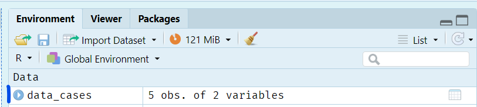

5 + 90
6 * 171
189 / 36.6
92^3
(12 + 9)^4 / 1000Introduction à R
Core
R Basics
Data Types
Vos premiers pas dans R. Familiarisez-vous avec Rstudio et avec les objets courants de R.
Objectifs
- Se familiariser avec RStudio
- Apprendre le fonctionnement de la console
- Créer et exécuter un script
- Créer des objets de base dans R, tels que des vecteurs et des data frames
Format des exercices
Ces exercices sont dans un format tutoriel contenant de brèves explications sur les concepts clés, des exemples et des instructions à suivre. Notre approche est très orientée sur la pratique, et à l’exception de cette première session partiellement axée sur l’interface, vous aurez beaucoup d’occasions de coder.
Les instructions pour les exercices seront données dans les formats suivants :
Cet encadré contient des instructions généralistes. Vous le trouverez en général au début d’une session, avec des instructions de mise en place.
Exemple : Ouvrez un script vide et nommez-le mon_premier_script.R.
Cet encadré contient des instructions de code que vous devez écrire dans votre script ou la console.
Exemple : Créez un objet region qui contient la valeur "Mandoul".
Cet encadré vous demande d’observer ou étudier quelque chose.
Exemple : Inspectez l’interface de RStudio.
Au cours de ces exercices, vous rencontrerez certainement des erreurs, qui se produisent lorsque R n’est pas en mesure d’exécuter une commande. Cela peut se produire pour de nombreuses raisons : une faute d’orthographe dans le nom d’un objet ou d’une fonction, le mauvais type de données fournis etc. Lorsqu’une erreur se produit, R arrête les calculs en cours et affiche un message expliquant ce qu’il s’est passé. Il est tout à fait normal d’avoir des erreurs, ça arrive tout le temps, à tous les programmeurs, qu’ils soient novices ou experts. Comme lorsque vous apprenez une langue (non informatique), vous vous améliorerez avec la pratique, en faisant des erreurs et en apprenant à les corriger.
RStudio et R
R est un langage de programmation fonctionnel qui peut être utilisé pour nettoyer et manipuler des données, effectuer des analyses (en particulier des analyses statistiques), visualiser des résultats, et bien plus encore.
RStudio est un logiciel qui fournit une interface facile à utiliser pour R (également appelé IDE, pour “Integrated Development Environment”). Son utilisation n’est pas obligatoire, mais très fortement recommandée pour les débutants.
Premiers pas avec RStudio
Ouvrez RStudio en utilisant le menu de démarrage de votre ordinateur ou le raccourci créé par défaut sur le bureau ; si RStudio était déjà ouvert, fermez-le et ouvrez-le à nouveau.
Vous devriez voir une interface qui ressemble à ceci :

Inspectez l’interface de RStudio.
Vous verrez trois ou quatre panneaux.
Panneau supérieur droit
En haut à droite se trouve un panneau avec plusieurs onglets. La plupart d’entre eux dépassent le cadre de ce cours, mais nous utiliserons les deux onglets suivants :
Environment : liste les objets enregistrés par l’utilisateur dans la session en cours. Comme vous venez de démarrer une nouvelle session, votre environnement devrait être vide.
History : comprend l’historique de toutes les commandes que vous avez exécutées au cours de la session actuelle.
Note
Ouvrir une nouvelle session R, c’est comme redémarer son ordinateur : tout est vide et prêt pour le calcul, de la même manière qu’il n’y a aucun programme ouvert lorsque vous allumez votre ordinateur pour la première fois.
Nous vous encourageons à arrêter et à re-démarrer vos sessions R régulièrement. Parfois cela corrigera certains de vos problèmes !
Panneau inférieur droit
En bas à droite se trouve un autre panneau comprenant les onglets suivants :
- Files : un explorateur de fichiers pour le répertoire de travail, qui est l’emplacement du dossier dans lequel R travaille actuellement.
- Plots : là où RStudio affichera les graphiques statiques. Cet onglet devrait être vide pour le moment.
- Packages : liste de tous les paquets R installés sur votre ordinateur. Les paquets sont des collections de fonctions qui permettent d’étendre les fonctionnalités de R. Nous les aborderons plus en détail dans la prochaine leçon.
- Help : un endroit pour lire les pages d’aide et la documentation pour les fonctions et les paquets.
- Viewer : un emplacement où RStudio affichera des sorties html telles que des tableaux, des widgets interactifs ou même des tableaux de bord.
Partie gauche
- A gauche (ou en bas à gauche si vous avez déjà quatre panneaux), vous devriez voir l’onglet console, où le code R est exécuté.
- En haut à gauche (si vous avez quatre panneaux) se trouvent les scripts R ouverts.
La console
La console est l’endroit où le code R s’exécute.
Au début d’une nouvelle session, un texte d’information sur votre cofiguration apparaît tout en haut de la console, dont le numéro et nom de la version de R. En dessous de ces informations, il y a une ligne avec le symbole > et un curseur clignotant.
Pour exécuter une commande dans R, tapez-la à la suite du > et pressez Entrée. R traitera alors votre code et affichera le résultat (s’il y en a un). Un nouveau > s’affichera alors sur la ligne suivante, indiquant que la console est prête pour la commande suivante.
Important
Si la dernière ligne est préfacée d’un + au lieu d’un >, cela signifie que la console n’est pas prête. Soit elle attend qu’un calcul d’une commande précédente finisse, soit elle attend la fin d’une commande incomplète. A tout moment, vous pouvez interrompre l’exécution en pressant la touche Echap.
Exécutez les commandes suivantes dans la console, une ligne à la fois, et observez les résultats.
Exécutez maintenant la commande suivante. Notez que le ) fermant est manquant, ce qui rend la commande incomplète. Que se passe-t-il ?
3 / (2 + 97Vous avez peut-être noté dans les exemples précédents que notre code contient beaucoup d’espaces. C’est en effet une bonne pratique que d’inclure des espaces autour de la plupart des opérateurs, tels que +, -, *, /, <, >, = et <-. Ces espaces facilitent la lecture et la compréhension de votre code, et dans certains cas (rares) ils permettent d’éviter des erreurs. Néanmoins, certains opérateurs ne doivent pas être entourés d’espaces, tels que ^, . et :.
1+29+4.8/3*3 # Mauvais
1 + 29 + 4.8 / 3 * 3 # Bien
1 ^ 2 # Mauvais
1^2 # BienNous pouvons également exécuter des fonctions dans la console. Nous aborderons les fonctions plus en détail plus tard mais sachez que les fonctions dans R sont similaires aux fonctions dans Excel (telles que SOMME ou MOYENNE).
Exécutez les commandes suivantes dans la console (une ligne à la fois).
# Trouvez la valeur minimale
min(5, 10)
min(1, 8, 56, 0.3)
# Trouvez la valeur maximale
max(568, 258, 314)Scripts
Les scripts sont des fichiers texte qui contiennent une série de commandes pour un langage de programmation particulier. L’extension du fichier indique le langage dans lequel les commandes sont écrites. Ici nous utiliserons l’extension .R. Les scripts nous permettent de créer du code qui peut être réutilisé, partagé et même automatisé.
Écrire son premier script
Pour créer un nouveau script, allez dans le menu File > New File > R Script. Alternativement, cliquez sur la petite icône avec un + vert sur une page blanche située en dessous du menu File. Ou encore, utilisez le raccourci clavier CTRL + MAJ + N. Ce nouveau script non sauvegardé apparaîtra sous la forme d’un document vierge dans le panneau supérieur gauche.
Pour enregistrer votre script, utilisez le menu File > Save As ou le raccourci clavier CTRL + S.
Créez un script et enregistrez-le sous le nom decouverte.R(n’oubliez l’extension !). Pour l’instant, vous pouvez l’enregistrer sur votre bureau ou à tout autre endroit pratique, mais nous aborderons l’organisation des scripts dans la prochaine session.
Exécuter du code à partir d’un script
Pour exécuter du code à partir d’un script, placez votre curseur sur la ligne que vous souhaitez exécuter (ou sélectionnez plusieurs lignes) et effectuez l’une des opérations suivantes :
- Cliquez sur le bouton
Runen haut à droite de la fenêtre de script - Utilisez le raccourci
CTRL + Entrée(le curseur passera ensuite à la ligne suivante) - Utiliser le raccourci
ALT + Entrée(le curseur restera sur la ligne actuelle)
Copiez le code que vous aviez exécuté dans la console lors des exercices précédents dans votre script et exécutez-le en testant les différentes méthodes ci-dessus.
A partir de maintenant, vous écrirez votre code dans votre script et l’exécuterez à partir de là, sauf indication contraire de notre part.
Commentaires
Dans R, le code qui est précédé d’un # (dièse) n’est pas exécuté, il est juste ignoré jusqu’à la fin de la ligne. C’est donc un bon moyen de documenter votre code.
# Ceci est un commentaire
2 + 3 # Ceci est aussi un commentaireIl est utile pour vous et vos collègues de commencer vos scripts par quelques lignes commentées fournissant des informations importantes sur le contenu de votre script.
# IMPORT & PREPARATION DES DONNEES #
# Auteure : Mathilde Mousset
# Date de création : 23/11/2024
# Dernière mise à jour : 28/01/2024
# Description : Importat et nettoyage des données de surveillance rougeole de MoissalaAjoutez quelques commentaires au début de votre script pour le décrire.
Les commentaires sont également un moyen pratique de diviser les scripts longs en sections thématiques, telles que “Import des données”, “Analyse”, “Visualisation”, etc. Par exemple :
# NOM DE LA SECTION 1 -----------------------------------------------
# NOM DE LA SECTION 2 ----------------------------------------------- Utilisez les commentaires pour créer des sections dans votre script qui correspondent aux sections principales de ce tutoriel.
Enfin, les commentaires permettent de prendre des notes sur votre code pour aider à la compréhension (celle de votre “moi futur” et celle de vos collègues). On entend souvent le conseil de se focaliser sur les commentaires qui expliquent le “pourquoi” plutôt que le “quoi”, car le “quoi” d’un code bien écrit devrait être clair.
Par exemple, ce commentaire est superflu :
1 + 3 # Code pour additionner un et troisEn comparaison, voici quelques cas où un commentaire est mérité :
- Vous définissez une constante, une valeur seuil de séroprévalence par exemple. Ajoutez un commentaire indiquant la référence d’où provient la valeur.
- Votre code contient une valeur ou un nom de fichier qui doit être mis à jour chaque semaine. Indiquez le dans un commentaire afin que toute personne utilisant le code en soit informée.
- Vous utilisez une commande contre-intuitive de premier abord, ou un paquet rare que votre collègue ne connaît peut-être pas. Commentez pour expliquer vos raisons.
Ceci étant dit, vous êtes en plein apprentissage, et les scripts que vous écrivez pendant ce cours sont l’équivalent de vos notes de cours, alors n’hésitez pas à utiliser autant de commentaires que vous le souhaitez pour expliquer les commandes et vous rappeler de ce qu’elles font. Vous écrirez naturellement moins de commentaires avec la pratique, lorsque les choses qui nouvelles aujourd’hui deviendront naturelles.
Astuce
Commentez une ligne sélectionnée avec le raccourci CTRL + MAJ + C.
Ajoutez une section de premier niveau avec CTRL + MAJ + R.
Ajoutez quelques commentaires pour décrire le code que vous avez écrit jusqu’à présent dans votre script.
Types de données
R dispose de plusieurs types de données. Ceux que nous verrons le plus souvent dans ce cours sont les suivants :
- numérique [numeric en anglais]
- chaîne de caractères (texte) [string en anglais]
- booléen (VRAI / FAUX) [boolean en anglais]
- date [date]
- facteur [factor]
Numérique
Le type numérique englobe les entiers [integers en anglais] et les doubles (nombres décimaux). Les nombres en R n’ont pas de signalétique, tapez simplement la valeur brute dans votre script ou votre console.
Chaînes de caractères
Les chaînes de caractères [strings] représentent le texte en R. Elles sont tapées en entourant votre texte de guillemets simples ou doubles, "district" ou 'cas' par exemple (les guillemets doubles sont généralement considérés comme la meilleure pratique).
Comparez la sortie dans la console pour les commandes suivantes :
28 # numérique
"28" # texte
28 + "28" # donne une erreurLa dernière commande ci-dessus a renvoyé une erreur car nous ne pouvons pas effectuer d’opérations arithmétiques combinant du texte et des nombres.
Important
R est sensible à la casse (majuscules ou minuscules), ce qui signifie que "ABC" n’est pas équivalent à "abc".
Si vous souhaitez créer une chaîne de caractères contenant des guillemets, il faut échapper les guillements les faisant précéder d’un \. Par exemple : "Elle dit \"Bonjour\" et s'en alla" ou 'C\'est une belle journée'. Si vous avez utilisé des guillements doubles pour créer votre chaîne de caractères, vous pouvez utiliser des guillemets simples à l’intérieur de celle-ci (par exemple : "C'est une belle journée") et vice versa (par exemple : 'Elle dit "Bonjour" et s'en alla').
Booléen (logique)
Le type booléen (ou logique) stocke des valeurs vrai/faux et est créé en écrivant soit TRUE [VRAI] ou FALSE [FAUX] sans guillemets.
En interne, R traduit TRUE et FALSE en équivalents numériques 1 et 0 respectivement, ce qui peut être utile pour des opérations arithmétiques.
Note
Vous verrez peut-être des personnes qui utilisent T ou F mais c’est déconseillé car T et F peuvent également être utilisés comme noms d’objets ou de variables. En revanche, les valeurs TRUE et FALSE sont réservées (protégées), ce qui signifie qu’elles ne peuvent pas être réaffectés à une autre valeur.
Déterminer le type d’un objet
Il existe plusieurs fonctions permettant de déterminer le type d’un objet (souvent appelé la classe de l’objet en R [class].
Tapez les commandes suivantes dans votre script et exécutez-les :
# Obtenir le type
class(28)
class("Mandoul")
# Test du type
is.numeric(28)
is.numeric("Mandoul")
is.character("Mandoul")
is.numeric(TRUE)
is.character(TRUE)
is.logical(FALSE)Enregistrer un objet
En R, presque tout est un objet y compris les fonctions, les vecteurs et les structures plus complexes. Souvent, nous souhaitons réutiliser certains objets tout au long d’un script (un jeu de données par exemple). Il est donc très utile de les stocker dans notre environnement (la mémoire de R). Pour ce faire, nous utilisons l’opérateur d’assignation <-.
Regardez le panneau environnement en haut à droite. Il devrait être vide. Tapez la commande suivante dans votre script et exécutez-la. Elle enregistre une variable appelée cas dans votre environnement.
cas <- 28Inspectez à nouveau l’environnement. Est-il toujours vide ?
Si vous souhaitez accéder à la valeur de votre nouvel objet, cas il vous suffit d’exécuter son nom.
cas[1] 28
Note
Nous écrivons les chaînes de caractères entre guillements pour permettre à R de faire la différence entre un objet cas et le texte "cas".
Une fois créés, les objets peuvent être utilisés dans d’autres commandes :
cas + 5[1] 33Dans votre script, créez un objet appelé region qui contient la valeur "Mandoul". Est-il bien apparu dans votre environnement ?
Astuce
N’oubliez pas que nous devons toujours entourer l’opérateur <- par des espaces afin d’améliorer la lisibilité et d’éviter les erreurs.
x<-3 # MAUVAIS
x <- 3 # BIENMettre à jour d’un objet
Nous souhaitons souvent mettre à jour la valeur stockée dans un objet. Pour ce faire, il suffit d’assigner une nouvelle valeur avec la même syntaxe que celle utilisée lors de la création de l’objet :
cas <- 32Mettez à jour l’objet region avec la valeur "Moyen Chari".
Noms d’objets
Pour nommer vos objets, il existe quelques règles (relativement) strictes :
- Ne pas commencer par un chiffre
- Ne pas utiliser d’espaces (utiliser un
_à la place) - Ne pas utiliser de valeurs réservées (comme
TRUEetFALSE) ou des noms de fonctions (commemean) - Ne pas utiliser de majuscules (c’est plus une convention qu’une règle dure)
Au-delà de ces règles, il existe également des bonnes pratiques plus subjectives et des styles personnels. En règle générale, les noms doivent être courts et descriptifs :
a <- 19 # Pas informatif
age_du_patient_a_l_admission <- 19 # Trop long
age <- 19 # Concis et précisDes noms clairs et informatifs contribuent à rendre votre code plus lisible, ce qui permet aux autres de le comprendre facilement sans avoir à constamment consulter le dictionnaire de données.
Structures de données
Jusqu’à maintenant, nous avons créé des objets simples qui contenaient une seule valeur. A présent nous allons nous intéresser à des structures plus complexes qui peuvent contenir des jeux de données.
Vecteurs
Il est possible de rassembler plusieurs valeurs (telles que des valeurs numériques ou des chaînes de caractères) en un seul objet, appelé vecteur.
Techniquement, il existe plusieurs types de vecteurs, dont :
- les vecteurs simples (ou vecteurs atomiques) ne peuvent contenir qu’un seul type de valeurs. Par exemple, un vecteur d’entiers contenant
2, 4, 6ou un vecteur de texte contenant"Mandoul", "Moyen Chari". - les vecteurs récursifs (généralement appelés listes) sont plus complexes et peuvent contenir plusieurs dimensions et types de données. Nous ne les aborderons pas dans cette leçon.
Cette leçon n’entrera pas dans les détails abstraits de ces structures et se concentrera sur celles que vous rencontrerez le plus souvent dans votre travail.
Vecteurs simples
Les vecteurs simples peuvent contenir une ou plusieurs valeurs d’un seul type de données. Ils ont donc deux propriétés essentielles : une longueur et un type. Dans le cadre de ce cours, nous utiliserons indifféremment les termes “vecteur simple” et “vecteur”, comme c’est généralement le cas dans la communauté R.
Techniquement, vous avez déjà créé vos premiers vecteurs simples lorsque vous avez construit les objets cas et region. Il s’agissait de vecteurs avec une longueur de taille une. Pour créer un vecteur avec plus d’une valeur, nous utiliserons la fonction c() (moyen mnémotechnique) :
cas <- c(2, 5, 8, 0, 4)Mettez à jour cas avec les valeurs ci-dessus et mettez à jour region pour créer un vecteur de chaînes de caractères contenant les valeurs suivantes : Mandoul, Moyen-Chari, Logone Oriental, Tibesti et Logone Occidental.
Nous pouvons maintenant utiliser des fonctions sur les objets que nous avons créés :
mean(cas) # Calcule la moyenne des valeurs stockées dans le vecteur[1] 3.8toupper(region) # Convertit les valeurs du vecteur en majuscules[1] "MANDOUL" "MOYEN-CHARI" "LOGONE ORIENTAL"
[4] "TIBESTI" "LOGONE OCCIDENTAL"Ecrivez des commandes dans votre script pour effectuer les actions suivantes :
- calculer la somme des valeurs de
casavec la fonctionsum() - convertir le texte de
regionen minuscules à l’aide de la fonctiontolower()
Accès aux valeurs d’un vecteur
Il est possible d’accéder à une valeur d’un vecteur en donnant son indice (i.e. sa position dans le vecteur) entre crochets :
cas[2] # Deuxième valeur de cas[1] 5cas[10] # Dixième valeur de cas[1] NAOups il n’y a pas de dixième valeur dans cas ! Nous reviendrons sur ce que ce NA signifie dans la section valeurs manquantes.
Nous pouvons également accéder à une plage de valeurs, comme nous pourrions le faire dans Excel. Nous utilisons l’opérateur : entre la position minimum et maximum de la plage :
cas[2:4] # de la deuxième à la quatrième valeur[1] 5 8 0Affichez la 3ème valeur du vecteur region.
Accédez aux valeurs “Mandoul” et “Moyen-Chari” du vecteur region.
Data frames
Les data frames sont des structures tabulaires / tableaux en 2D avec des lignes et des colonnes. Il s’agit d’une structure très similaire à celle d’un “tableau” dans Excel. En tant qu’épidémiologistes, ce type d’objet est l’un des plus utiles et vous l’utiliserez quotidiennement pour stocker des jeux de données (des listes linéaires par exemple).
Création d’un data frame
Nous créons un data frame avec la fonction data.frame() :
data.frame(col1 = c(1, 4, 2, 9),
col2 = c("un peu de texte", "plus de text", "Salut !", "les epidemiologistes !")) col1 col2
1 1 un peu de texte
2 4 plus de text
3 2 Salut !
4 9 les epidemiologistes !Ici, on a crée col1 à partir d’un vecteur numérique, et col2 à partir d’un vecteur de chaînes de caractères. Nous avons choisi les noms des colonnes (col1 et col2), ce qui est normal, mais vous pouvez exécuter le code sans nommer les colonnes pour voir comment R crée lui même des noms.
Dans votre script, créez un data frame nomé data_cas qui contient cas dans une colonne et region dans l’autre.
Exploration d’un data frame
L’objet data_cas devrait maintenant apparaître dans votre environnement. Vous pouvez cliquer sur le cercle bleu avec un triangle blanc pour dérouler des informations supplémentaires, ou cliquer sur son nom pour le visualiser dans un onglet dans le même volet que votre script.

data_cas apparaît désormais dans l’onglet Environnement.Il existe plusieurs fonctions pratiques pour explorer un data frame :
Exécutez les commandes suivantes et essayez de déterminer le type d’informations qu’elles renvoient.
str(data_cas) # STRucture de l'object
dim(data_cas) # DIMension de l'object
nrow(data_cas) # Nombre de lignes (row = ligne)
ncol(data_cas) # Nombre de COLonnes
names(data_cas) # noms des colonnesPratiquons un peu plus ! R est livré avec quelques data frames intégrés auxquels il est possible d’accéder directement, dont un appelé iris. C’est pratique pour cette session car nous n’avons pas encore appris à importer des données dans R (ne vous inquiétez pas, nous travaillerons sur des données de liste linéaire dès la prochaine session !).
Nous pouvons afficher les premières lignes de ce data frame grâce à la fonction head() [head = la tête en anglais] :
head(iris) Sepal.Length Sepal.Width Petal.Length Petal.Width Species
1 5.1 3.5 1.4 0.2 setosa
2 4.9 3.0 1.4 0.2 setosa
3 4.7 3.2 1.3 0.2 setosa
4 4.6 3.1 1.5 0.2 setosa
5 5.0 3.6 1.4 0.2 setosa
6 5.4 3.9 1.7 0.4 setosaCombien de lignes et de colonnes y a-t-il dans iris? Quels sont les noms des colonnes de ce data frame ?
Accéder aux données d’un data frame
En R, il existe plusieurs méthodes pour accéder aux lignes et/ou colonnes d’un data frame. Dans cette session d’introduction, nous nous concentrerons sur la syntaxe [row, column].
Nous pouvons utiliser un numéro (ou un intervalle) de ligne pour extraire des lignes, et des numéros (ou un intervalle) de colonnes pour extraire les colonnes. Ont peut également utiliser le nom des colonnes pour y accéder.
data_cas[1, 2] # Afficher la valeur de la ligne 1, deuxième colonne[1] "Mandoul"data_cas[1, "region"] # Afficher la valeur de la lignbe 1, pour la colonne région[1] "Mandoul"Si nous voulons isoler toutes les lignes (ou colonnes), nous pouvons simplement laisser un espace à la place du numéro/nom :
data_cas[1, ] # Extrait la première ligne (garde toutes les colonnes) cas region
1 2 Mandouldata_cas[2:4, ] # Valeurs des lignes 2 à 4, pour toutes les colonnes cas region
2 5 Sud Kivu
3 8 Kasai oriental
4 0 Kasaidata_cas[ , "region"] # Garde toutes les lignes mais que la colonne région[1] "Mandoul" "Sud Kivu" "Kasai oriental" "Kasai"
[5] "Haut Katanga" Nous pouvons même sélectionner plusieurs indices non consécutifs en utilisant un vecteur :
data_cas[c(1, 3), ] # Ligne 1 et 3 (toutes les colonnes) cas region
1 2 Mandoul
3 8 Kasai orientalSoyez attentifs, le type de l’objet renvoyé par [ ] dépend de l’indexation utilisée :
str(data_cas[1 , ]) # Renvoit un data frame'data.frame': 1 obs. of 2 variables:
$ cas : num 2
$ region: chr "Mandoul"str(data_cas[ , 1]) # Renvoit un vecteur num [1:5] 2 5 8 0 4Une syntaxe simplifiée existe pour extraire des colonnes d’un data frame :
data_cas[2] # Renvoit la deuxième colonne (format data frame) region
1 Mandoul
2 Sud Kivu
3 Kasai oriental
4 Kasai
5 Haut Katangadata_cas["region"] # Renvoit la colonne région (format data frame) region
1 Mandoul
2 Sud Kivu
3 Kasai oriental
4 Kasai
5 Haut KatangaEcrivez le code pour :
- extraire la troisième valeur de la colonne
regionde votre data frame - extraire les deuxième et troisième valeurs de la colonne
cas - calculer la somme des valeurs de la colonne
cas
Valeurs manquantes
En tant qu’épidémiologistes, nous sommes constamment confrontés aux données manquantes. Dans R, celles-ci sont codées à l’aide d’une valeur spéciale : NA [signifiant Not Available]. La valeur NA n’a pas de type fixe, elle prend celui des valeurs qui l’entourent. Par exemple, un NA dans une colonne numérique est traitée comme une valeur numérique. Nous aurons des occasions de manipuler les NA dans la suite du cours.
Fonctions
Les fonctions sont des objets qui contiennent des commandes (au lieu de valeurs) qui sont exécutées chaque fois que la fonction est lancée. Vous êtes sans doute familiers avec les fonctions dans Excel, telles que la fonction SOMME() ou la fonction MOYENNE(). Bonne nouvelle, les fonctions sont similaires dans R !
La majorité des fonctions que vous allez utiliser ont besoin d’informations complémentaires : a minima des données, mais aussi d’autres paramètres. On appelle ces informations des arguments. Les arguments sont normalement nommés.
Par exemple, lorsque nous avons exécuté la commande sum(cas), nous avons fourni le vecteur cas comme premier (et seul) argument de la fonction sum().
Parmis les arguments d’une fonction, certains peuvent être obligatoires, d’autres facultatifs. Le premier argument est presque toujours obligatoire et est souvent un data frame ou un vecteur de données. Comme c’est un argument évident, on omet souvent son nom (il vous a sans doute semblé naturel de taper mean(cas) au lieu de mean(x = cas)).
Les arguments facultatifs, en revanche, sont généralement utilisés avec neur nom. Par exemple : mean(cas, na.rm = TRUE). Les arguments facultatifs sont souvent fournis avec des valeurs par défaut raisonnables, ce qui fait que l’utilisateur ne les spécifie que lorsqu’il a besoin de changer ces valeurs par défaut. Par exemple, l’argument na.rm de la fonction mean() controle comment les valeurs manquantes sont gérées lors du calcul de la moyenne [“na” en référence aux valeurs manquantes NA, et “rm” comme raccourci de “ReMove”, que l’on peut traduire dans ce contexte par enlever ou ignorer]. Par défault, la valeur de na.rm est FALSE Ainsi, par défaut, la moyenne de données avec des valeurs manquantes renverra toujours NA :
mean(c(1, 3, NA))[1] NACeci est vrai pour de nombreuses opérations arithmétiques dans R. Si l’on veut que que R calcule la moyenne sur toutes les données disponibles et ignore les valeurs manquantes, nous devons explicitement fournir l’argument na.rm = TRUE:
mean(c(1, 3, NA), na.rm = TRUE)[1] 2
Astuce
- Les arguments sont séparés par des virgules.
- Ces virgules doivent toujours être suivies d’un espace
- Chaque fois qu’un argument nommé est utilisé, l’attribut
=doit être entouré d’espaces :
mean(cas,na.rm=TRUE) # MAUVAIS
mean(cas, na.rm = TRUE) # BONSi vous écrivez une commande avec de nombreux arguments, séparez chaque argument sur sa propre ligne pour améliorer la lisibilité :
mean(cas,
na.rm = TRUE) Que se passe-t-il si l’on fournit plusieurs arguments dans le désordre ? Si vous avez nommé les arguments la fonction s’exécutera correctement, mais le code sera contre-intuitif et peu lisible. Nous vous conseillons de respecter l’ordre standard, en plaçant les arguments obligatoires tels que les données en premier.
# Fonctionnel mais dur à lire
mean(na.rm = TRUE,
x = cas)
# mieux
mean(cas,
na.rm = TRUE)En revanche, si vous ne nommez pas les arguments et les passez dans le désordre, alors la fonction ne fonctionnera pas comme prévu, voire renverra une erreur :
mean(TRUE, cas) # Pas ce que vous attendezTerminé !
C’est tout pour cette session, bravo pour vos débuts avec R et RStudio !